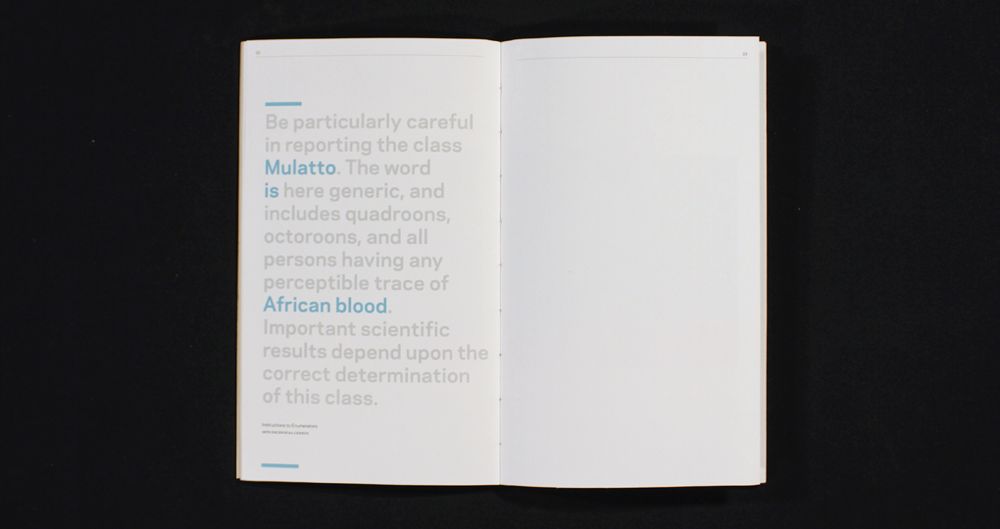
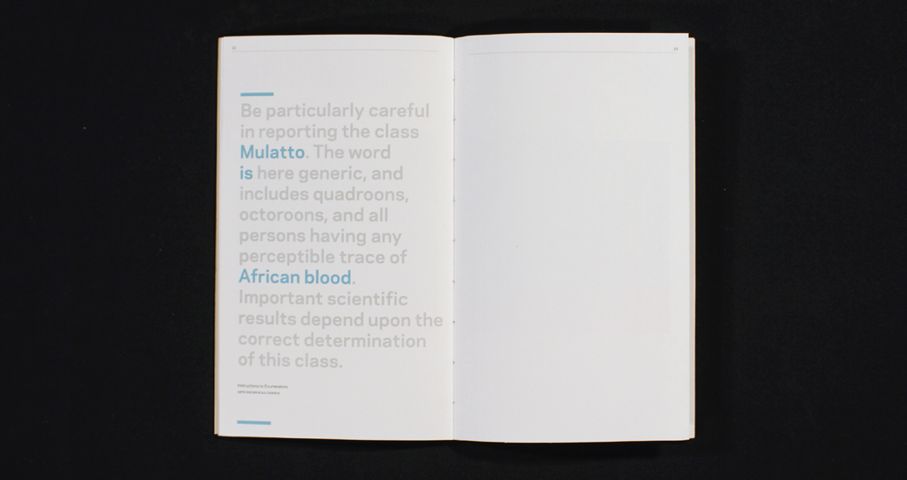
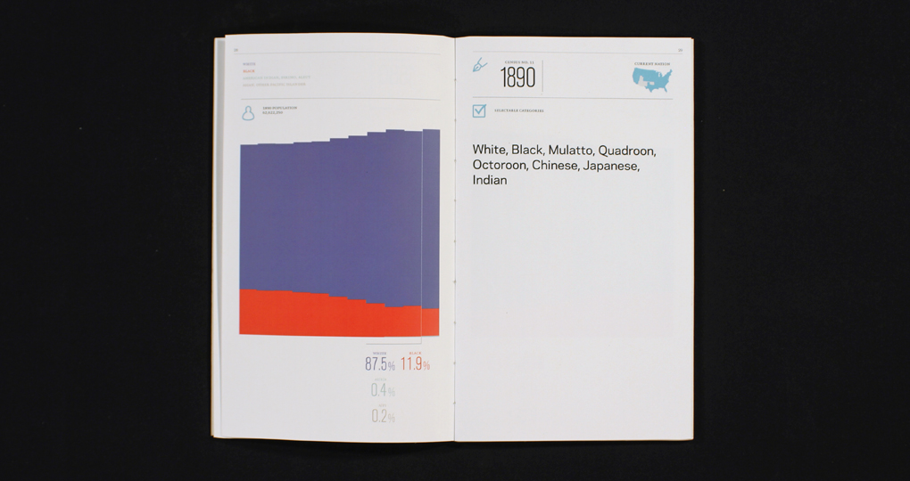
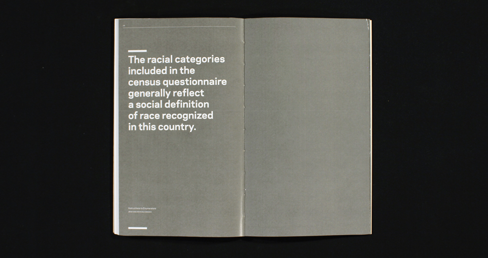
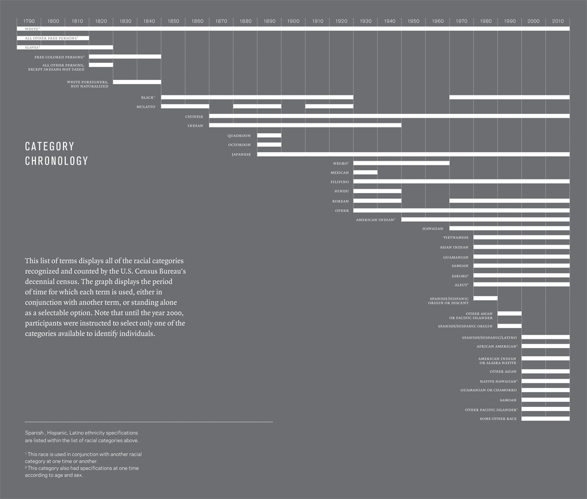

This handbound book lays out the counted groups of people spanning back to the first recorded survey in 1790.
 

The U.S. Census Survey is a fascinating starting point to consider how we have been categorized by this ever-changing concept we call race.
  This chart maps the terms assigned to individuals over two centuries.